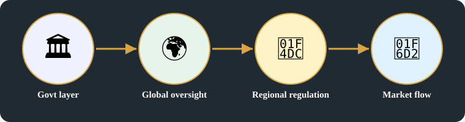
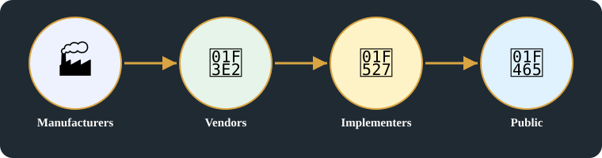

🧬 Systems Evolution · Card G · 7 of 11 · Batch 2, branch batch/b2publish
Govt Layer (TO controll public
Enhanced headline [Added, labelled, related only]: Who controls and who builds: government layer, global oversight, and government networks
Original images +
Original headline(s) first (R15), exactly as written:
- Govt Layer (TO controll public
- Global Oversight
- Govt Network Series
Original pages behind this card, untouched. On the public repo these images are NOT included — they are in the private Vercel deploy only, as with Batch 1.


Detailed explanation

1. A unifying layer across all flows
- Government is added as a unifying layer across all flows, from source to consumer, to control the public — not as an afterthought, but as a layer over the whole system.
- World TOP layer (global oversight): UN / WTO / Codex, then countries and international bodies — ISB — then regional regulation, with TRAI and FCC; FDA → telecom, NHTSA → automotive, NIST → cybersecurity.
- Sector standards, as written: automotive – ISO; Electronics – UL, ROHS, WEE, PCI, DSI; healthcare – ICH, FDA, EMA, ISO; cloud – ISO + SOC2; Food & agriculture – HACCP, GFSI.
2. Global oversight, in order, then the market flow
- Global Oversight → International standard bodies → Regional Regulation → National Enforcement & certification → Industry & Sector Standards → market flow: that chain, as drawn on the page, is preserved as written.
- Standard bodies listed: ISO, IEC, IEEE, IETF, IAPP, ICANN / RIR; Countries: GDPR / CCPA, FCC / CE, FERPA; National bodies + labs; cybersecurity.
- Market flow actors: suppliers & vendors → manufacturer → Distributors & Logistics → Retailers / platform → consumers.
- [Added, labelled distinction, under R14 — not one hierarchy:] The page draws this as one top-down chain, and that drawing is preserved as written. In practice these bodies have different legal powers and scopes: RIRs allocate regional number resources, IETF sets Internet technical standards, IEEE sets standards across electrical, electronics, and computing, ICANN handles names and addresses, ISO/IEC set international standards, and FCC/TRAI are national regulators. They are not a single chain of command.
- [Added, labelled exclusion:] System Integrator, Operations Team, regional-office example, VLAN deployment, and link-failure monitoring are NOT on the original page and are NOT used here as if they were.
3. Government networks, built like the market, in reverse
- Series devices: routers, switches, firewalls, radio comm gear, video surveillance equipment.
- Business H/W → manufacturers (make finished or unit equipment); Vendors give contracts, including all govt contracts: Cisco, Juniper N/W, Arista, Fortinet, Dell EMC, Huawei, ZTE, and others.
- Suppliers → implementers → buyers sellers → Customers / Public (buyers – customers); Implementers → govt agencies, deploying networks for communication; layers between govt & public.
- Management / public controllers from govt; Created private networks for business needs, reported to govt as per regulations.
Summary:
- Government sits as a unifying layer across all flows, from global oversight down to sector standards and the market flow.
- Those bodies are not one hierarchy (R14): each has its own legal power and scope, even though the page draws them as one chain.
- Government networks are built the same way the market works, in reverse: series, manufacturers, vendors, implementers, buyers, public — with government controllers closing the loop.

Key points
- Govt Layer: Add unifying layer to across all flows (Source – consumer); world TOP layer (global oversight); UN / WTO / Codex; Countries, international bodies — ISB; Regional Regulation, with (TRAI) (FCC); FDA → telecom, NHTSA → automotive, NIST → cybersecurity; Sector standards: automotive – ISO; Electronics – UL, ROHS, WEE, PCI, DSI; healthcare – ICH, FDA, EMA, ISO; cloud – ISO + SOC2; Food & agriculture – HACCP, GFSI
- Global Oversight: Global Oversight → International standard bodies → Regional Regulation → National Enforcement & certification → Industry & Sector Standards → market flow; Standard bodies listed: ISO, IEC, IEEE, IETF, IAPP, ICANN / RIR; Countries: GDPR / CCPA, FCC / CE, FERPA; National bodies + labs; cybersecurity; Market flow actors: suppliers & vendors → manufacturer → Distributors & Logistics → Retailers / platform → consumers
- Govt Network Series (margin: Sep27 — month/day only, no year, NOT a source date): Series devices: routers, switches, firewalls, radio comm gear, video surveillance equipment; Business H/W → manufacturers (make finished or unit equipment); Vendors give contracts, including all govt contracts: Cisco, Juniper N/W, Arista, Fortinet, Dell EMC, Huawei, ZTE, and others; Suppliers → implementers → buyers sellers → Customers / Public (buyers – customers); Implementers → govt agencies, deploying networks for communication; layers between govt & public; Management / public controllers from govt; Created private networks for business needs, reported to govt as per regulations
Horizontal links
- FCC / TRAI thread → Batch 1, Card B (directory → DNS, FCC 1934) and Batch 1, Card E (FCC approval gate).
- Standards bodies thread → Batch 1, Card B, under R14.
- Vendors / manufacturers thread → Batch 1, Card C.
Related topics
Related cards in learning order, with their technical perspectives as lenses — not duplicate cards in domain boxes (R17).
- Card F — Univescal product / Business (network / Standards
Systems evolution · technical perspectives: industrial-business-networks, infrastructure-operations, institutions-markets - Card H — UI frameworks Evolution
Systems evolution · technical perspectives: software-engineering-development, hardware-computing, infrastructure-operations - Batch 1, Card B — Naming, addressing and regulation
Institutions & markets